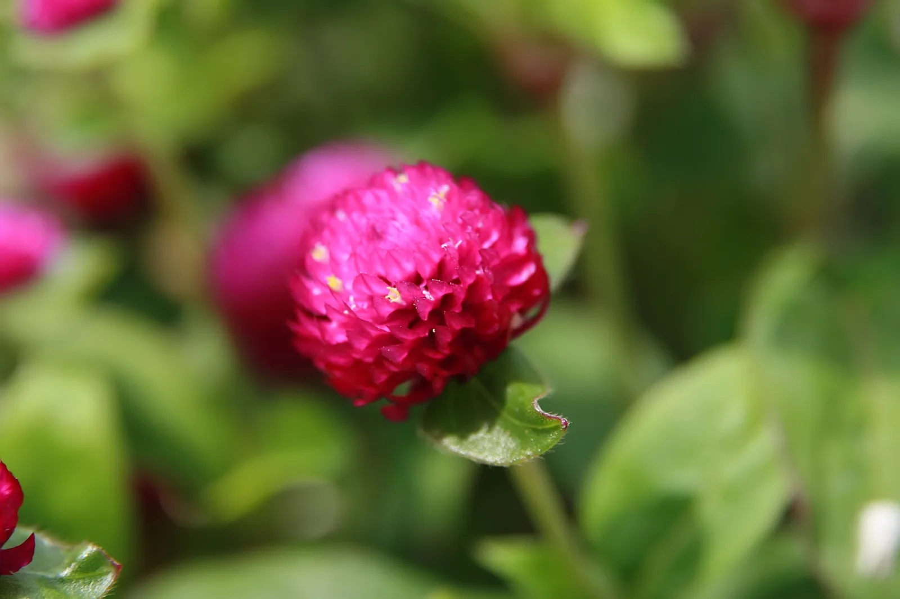
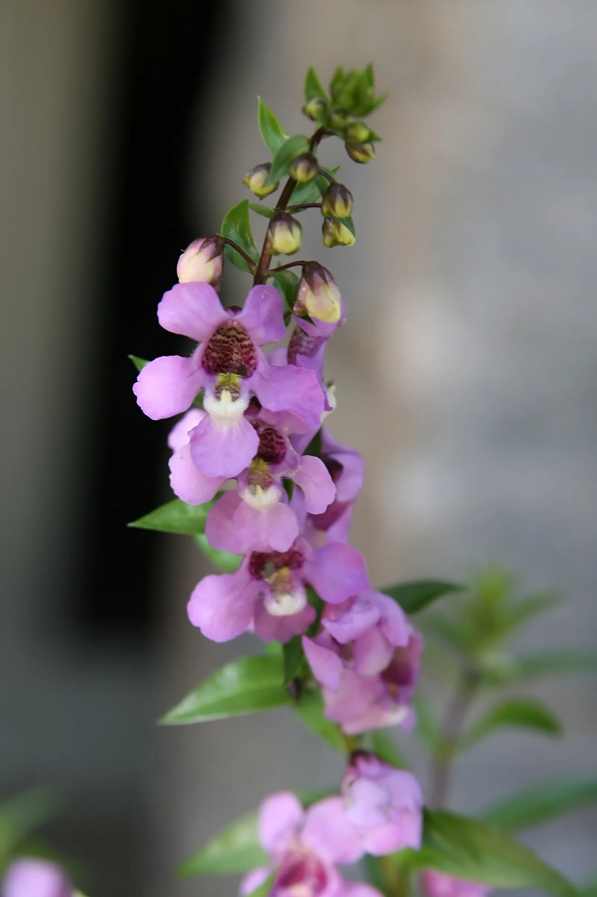
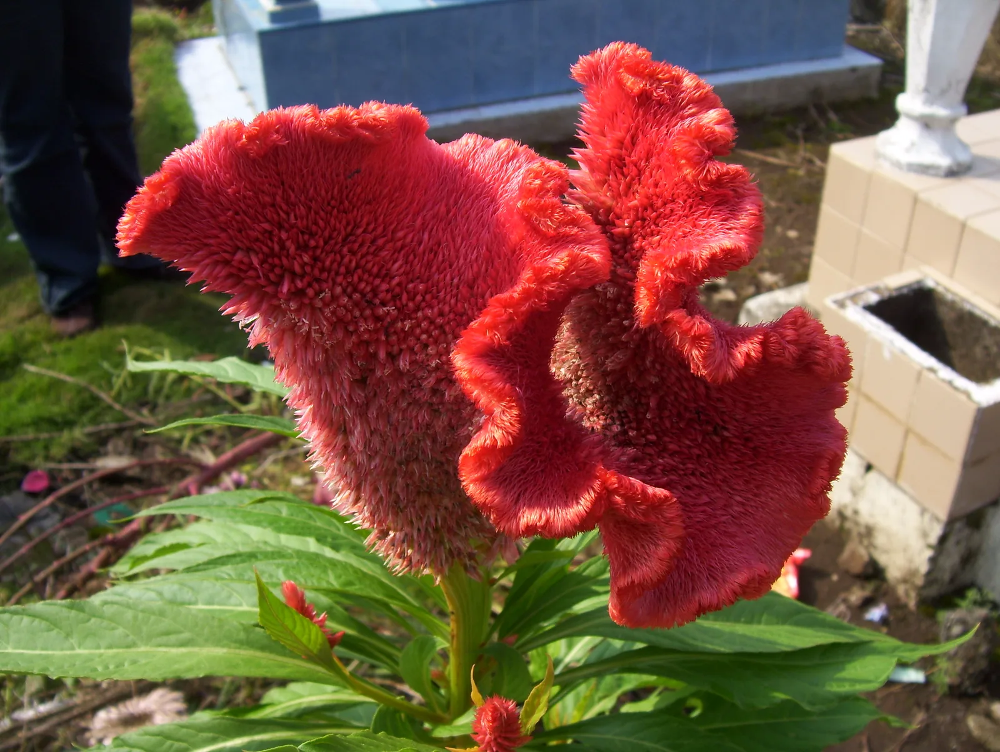

▲ 가을 꽃밭의 대표 이미지인 핑크뮬리 군락(안성팜랜드 촬영, 참고 사진). 양주 나리농원에도 이와 유사한 규모의 핑크뮬리 존이 조성돼 있다 ⓒ 안성팜랜드
1. 양주 나리농원, 언제 어디서 열리나
양주 나리농원 가을 개장은 2026년 9월 18일(금)부터 10월 25일(일)까지 38일간, 경기 양주시 광사동 812번지 일원에서 진행된다. 이번 시즌 주제는 '가을엔 양주천일홍'. 운영시간은 매일 오전 9시부터 오후 8시까지이며, 개장 기간 중인 9월 26일부터 10월 18일까지는 '2026 양주 천일홍 가을 페스타'가 함께 열려 9월 26~27일과 10월 3~4일 주말에는 문화공연도 진행된다. 나리농원 전체 부지는 약 11만5725㎡ 규모로, 축제 시즌이 아닌 평상시에는 별도 입장료 없이 산책이 자유로운 시민 힐링 공간이다.
2. '나리농원'인데 나리꽃이 없다? — 가을에 실제로 피는 꽃
이름만 보면 나리꽃(백합류) 명소로 오해하기 쉽지만, 나리꽃은 6~8월에 피는 여름꽃이라 9~10월 가을 시즌에는 볼 수 없다. 대신 이 시기 나리농원을 채우는 건 천일홍, 안젤로니아, 맨드라미 등 30여 종이다. 특히 천일홍은 전국 최대 규모 군락으로 꼽혀 왔으며(2025년 기준 약 6만6155㎡), 2026년에는 무지갯빛 줄무늬 패턴으로 꽃밭을 새롭게 조성하고 이국적인 풍경의 아열대 존도 대폭 확대했다. 예년에는 여기에 핑크뮬리와 댑싸리 군락, 코스모스밭도 함께 어우러져 '전국 4대 핑크뮬리 성지'로 불릴 만큼 규모가 컸던 만큼, 2026년에도 같은 구성으로 이어질 가능성이 높지만 정확한 개화 현황은 방문 전 양주시 공식 채널에서 확인하는 게 안전하다.

▲ 나리농원 가을 개장의 주인공인 천일홍(Gomphrena globosa). 둥글고 진한 자홍색 꽃송이가 특징이다 사진=Wikimedia Commons (David J. Stang, CC BY-SA 4.0)
천일홍은 이름 그대로 '천 일 동안 붉다'는 뜻을 가진 꽃으로, 색이 오래 유지돼 가을 내내 절정에 가까운 색감을 볼 수 있는 것이 특징이다. 안젤로니아는 보라·분홍 계열의 작은 나팔 모양 꽃이 줄기를 따라 촘촘히 피고, 맨드라미는 붉은 볏 모양의 화려한 꽃차례로 포인트를 준다.

▲ 나리농원 가을 화단을 채우는 안젤로니아(Angelonia angustifolia). 작은 나팔 모양 꽃이 줄기마다 촘촘히 달린다 사진=Wikimedia Commons (David J. Stang, CC BY-SA 4.0)

▲ 화려한 붉은 볏 모양이 특징인 맨드라미(Celosia argentea var. cristata). 천일홍·안젤로니아와 함께 나리농원 가을 화단의 포인트가 된다 사진=Wikimedia Commons (Gunnar Wolf, CC BY-SA 3.0)

▲ 가을 꽃밭 하면 떠오르는 코스모스(경주에서 촬영한 참고 사진). 나리농원에도 예년마다 코스모스밭이 함께 조성돼 왔다 ⓒ 공유마당(한국저작권위원회)
3. 입장료와 주차 — 낸 돈이 상품권으로 돌아온다
가을 개장 기간에는 무료 산책이 아닌 유료 입장으로 전환된다. 양주시 관외 거주자는 성인 기준 7,000원(5,000원 환급), 청소년은 5,000원(3,000원 환급)이며, 환급액은 지류형 양주사랑상품권으로 지급돼 현장 매점이나 양주시 내 400여 개 가맹점에서 다시 쓸 수 있다(기존 '나리쿠폰' 대신 2026년 처음 도입된 지류형 상품권 방식이다). 양주시민은 성인 1,000원 수준으로 더 저렴하게 입장할 수 있다는 안내도 있으니, 거주지에 따른 정확한 요금은 방문 전 공식 채널에서 한 번 더 확인하는 게 안전하다. 주차는 나리농원 제1·2주차장(광사동 811~814번지 일대)을 무료로 이용할 수 있고, 2026년에는 관람 편의를 위해 관람카트 노선을 확대하고 매표소도 새로 정비했다.

▲ 핑크뮬리 군락(경주 첨성대 일원 참고 사진). 나리농원의 핑크뮬리는 '전국 4대 성지' 중 하나로 꼽혀 왔다 ⓒ 경상북도(공공누리 제1유형)
4. 차로 가는 길 — 고암IC에서 4분
수도권 제2순환고속도로 고암IC를 이용하면 차로 약 4분이면 나리농원에 닿는다. 대중교통은 지하철 1호선 양주역에서 약 15분 거리다. 봄철에는 청보리·유채꽃으로, 가을철에는 천일홍·핑크뮬리로 시즌마다 다른 얼굴을 보여주는 곳이라, 계절을 확인하고 방문 시기를 정하는 게 좋다.
📍 주말 혼잡 대비
천일홍 가을 페스타 문화공연이 열리는 9월 26~27일, 10월 3~4일 주말에는 방문객이 몰릴 수 있다. 오전 이른 시간에 도착하거나, 공식 홈페이지에서 당일 공연 일정과 혼잡도를 미리 확인하는 편이 낫다.
5. 함께 둘러볼 인근 관광지
나리농원 주변에는 장흥유원지, 가나아트파크, 필룩스조명박물관, 사적으로 지정된 회암사지 등 반나절 코스로 묶기 좋은 명소가 모여 있다. 등산까지 계획한다면 북한산국립공원과 국립아세안자연휴양림도 멀지 않다. 꽃구경으로 오전을 보내고, 오후에는 미술관이나 박물관 나들이로 이어가는 동선을 짜기에 무리가 없다.
| 구분 | 내용 |
|---|---|
| 기간 | 2026.9.18(금)~10.25(일), 38일간 |
| 장소 | 경기 양주시 광사동 812번지 일원 |
| 운영시간 | 매일 09:00~20:00 |
| 주요 꽃 | 천일홍·안젤로니아·맨드라미 등 30여 종(나리꽃 아님) |
| 입장료(관외 기준) | 성인 7,000원(5,000원 양주사랑상품권 환급), 청소년 5,000원 |
| 주차 | 나리농원 제1·2주차장 무료 |
| 연계 행사 | 2026 양주 천일홍 가을 페스타(9/26~10/18) |

▲ 가을 꽃놀이의 상징인 코스모스 클로즈업(참고 사진) ⓒ 공유마당(한국저작권위원회)
6. 정리 — 출발 전 확인할 것
✅ 출발 전 확인할 것
· '나리농원'이라는 이름과 달리 가을엔 나리꽃이 아닌 천일홍·안젤로니아·맨드라미 등이 핀다
· 정확한 입장료·환급 조건은 방문 전 양주시 공식 채널에서 재확인
· 주차는 무료지만, 페스타 주말에는 도착 시간을 앞당기는 게 안전
· 핑크뮬리·코스모스 등 부속 식재 현황은 해마다 조성 구역이 달라질 수 있어 현장에서 최신 정보를 확인하자